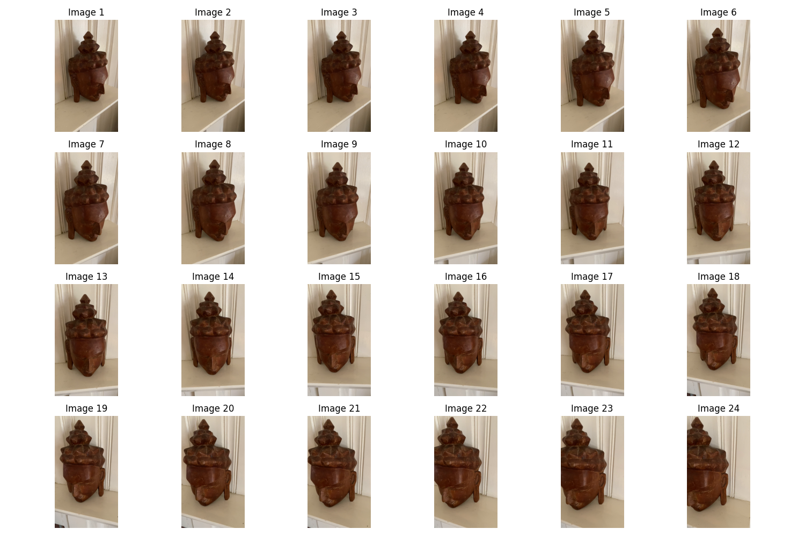
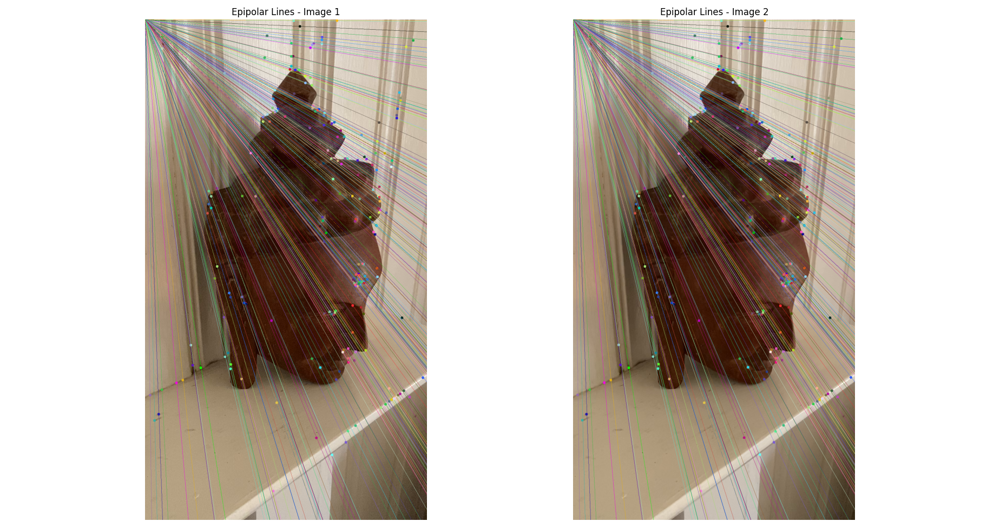
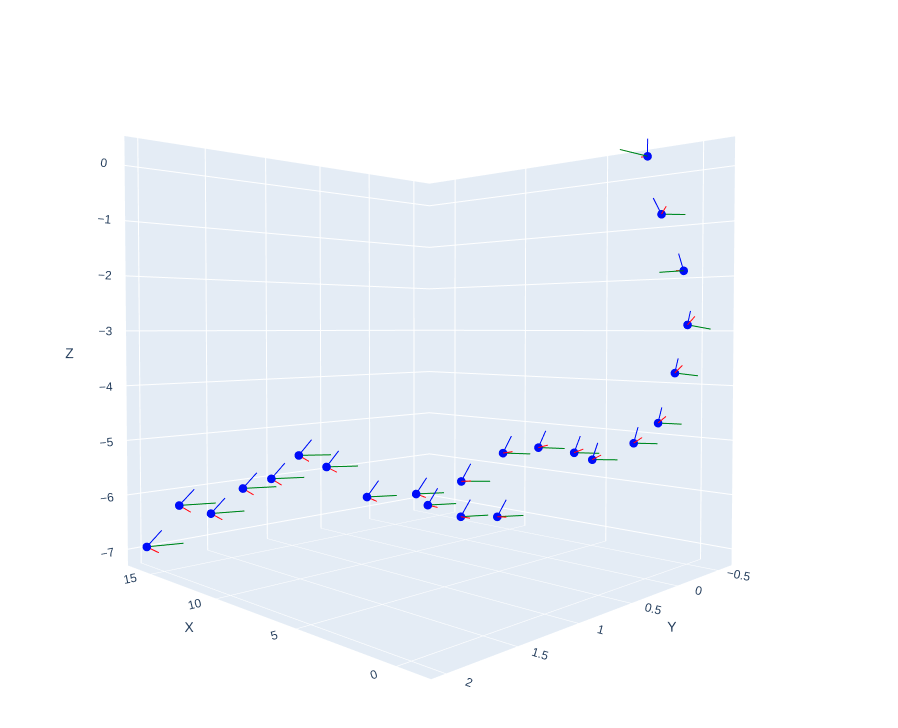
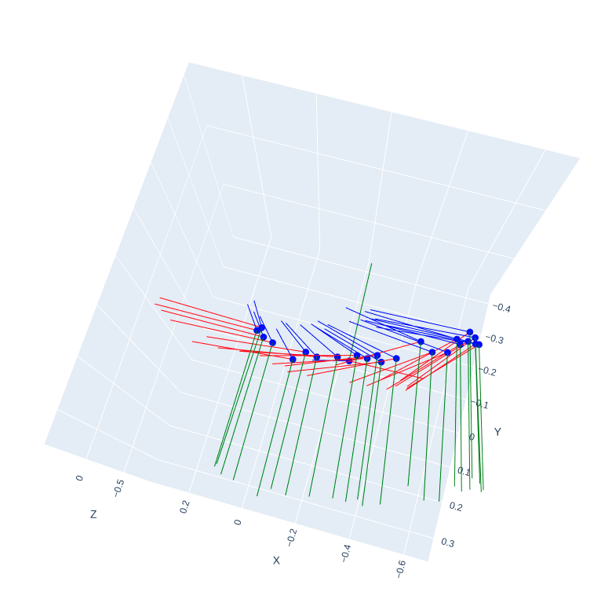

Incremental Structure from Motion
- GitHub Repository: Project Link
Project Overview
This project develops an Incremental Structure from Motion (SfM) system, an advanced technique in computer vision that estimates 3D structures from sequential 2D image sequences. These estimations are crucial for applications in 3D mapping, virtual reality, and augmented reality.
Key Features and Processes
- Feature Detection: Implemented using Scale-Invariant Feature Transform (SIFT) to detect and describe local features in images.
- Fundamental and Essential Matrix Estimation: Calculates these matrices to understand the geometric relationships between multiple views.
- Camera Pose Estimation: Recovers the pose of the camera using the essential matrix and triangulates points to map the correspondences in 3D.
- Projection Matrix Estimation: Utilizes the Perspective-n-Point (PNP) algorithm to estimate projection matrices across sequential images.
- Bundle Adjustment: Performed using the Graph-based optimization tool GTSAM to refine the camera poses and 3D point estimates, minimizing reprojection errors.
Visualizations and Outputs
Below are some key visual outputs from the project:
- Epipolar Geometry: Illustrates the fundamental constraints between stereo images, aiding in feature matching and depth estimation.
- 3D Point Cloud: A visual representation of the reconstructed 3D points from the 2D images.
- Camera Trajectories: Shows the estimated path of the camera movement throughout the image sequence.
Video Demonstrations
Gallery



